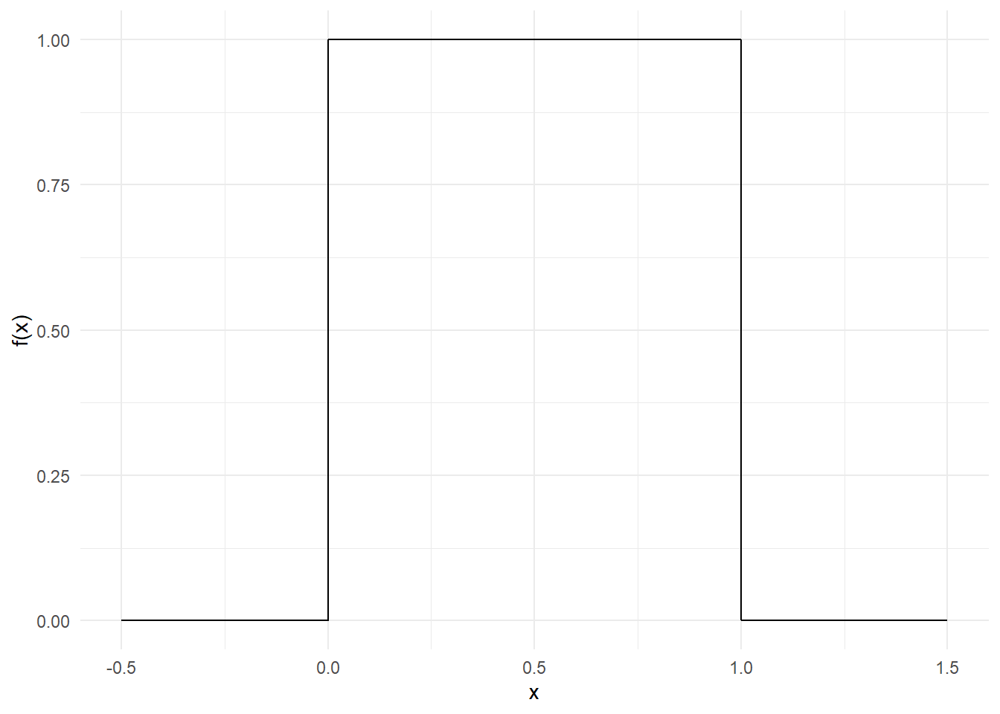
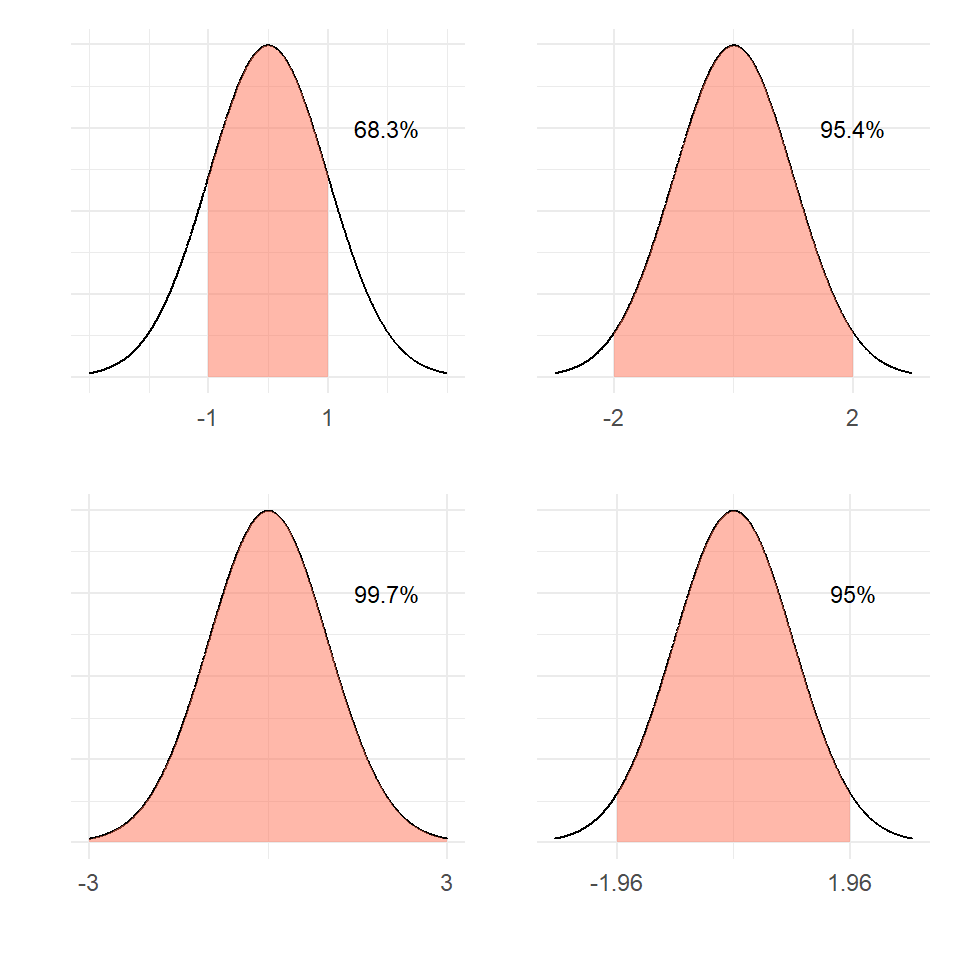
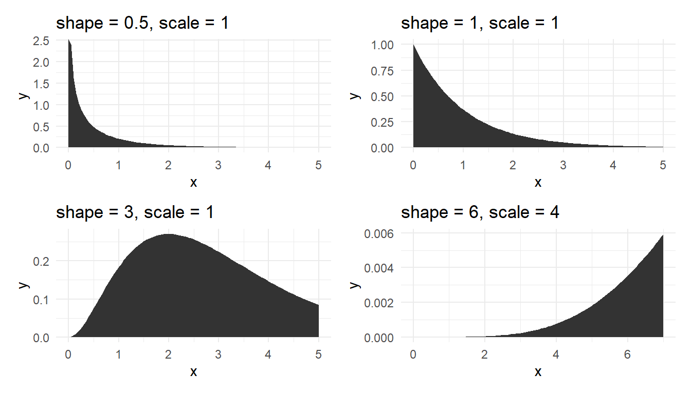
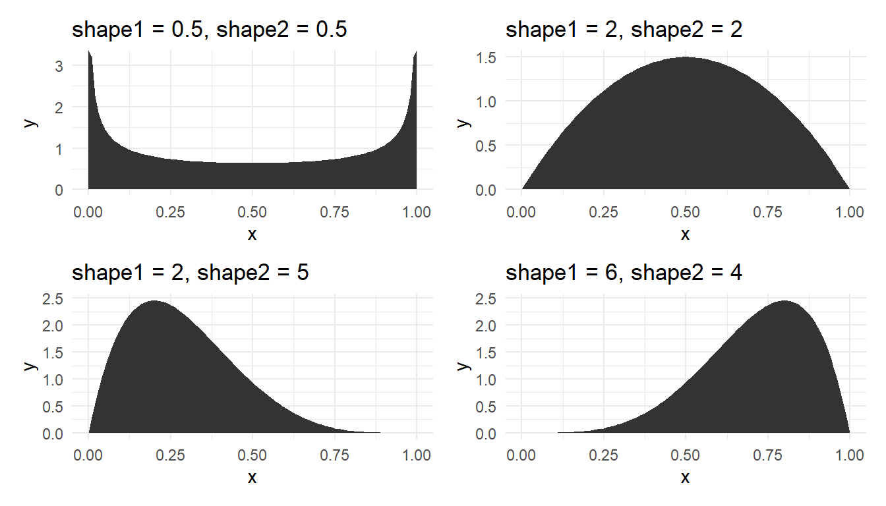
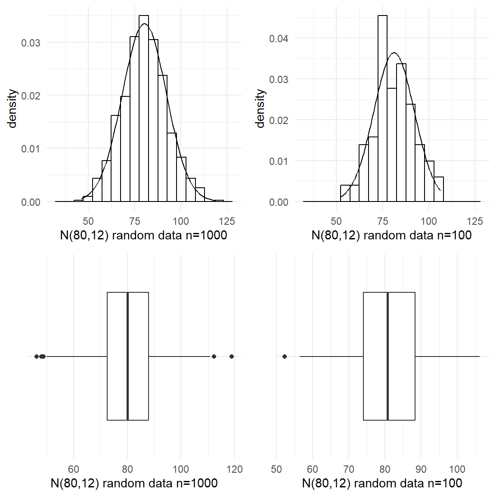
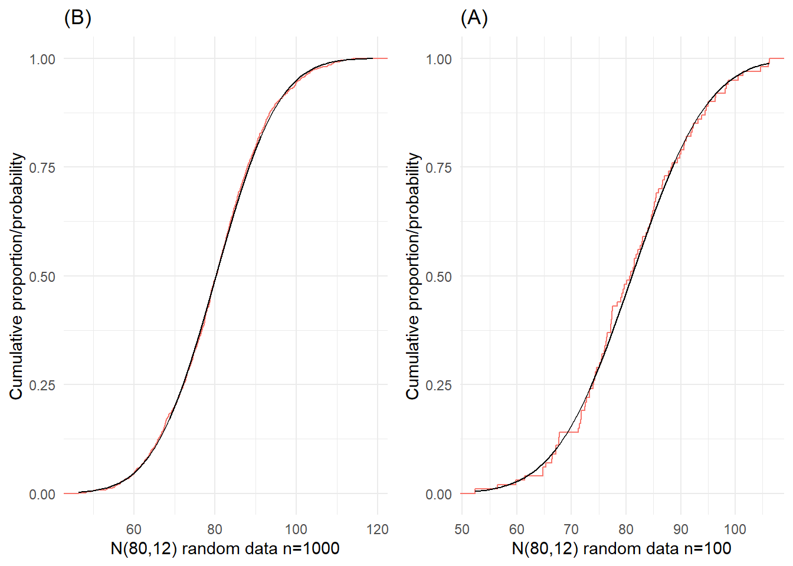
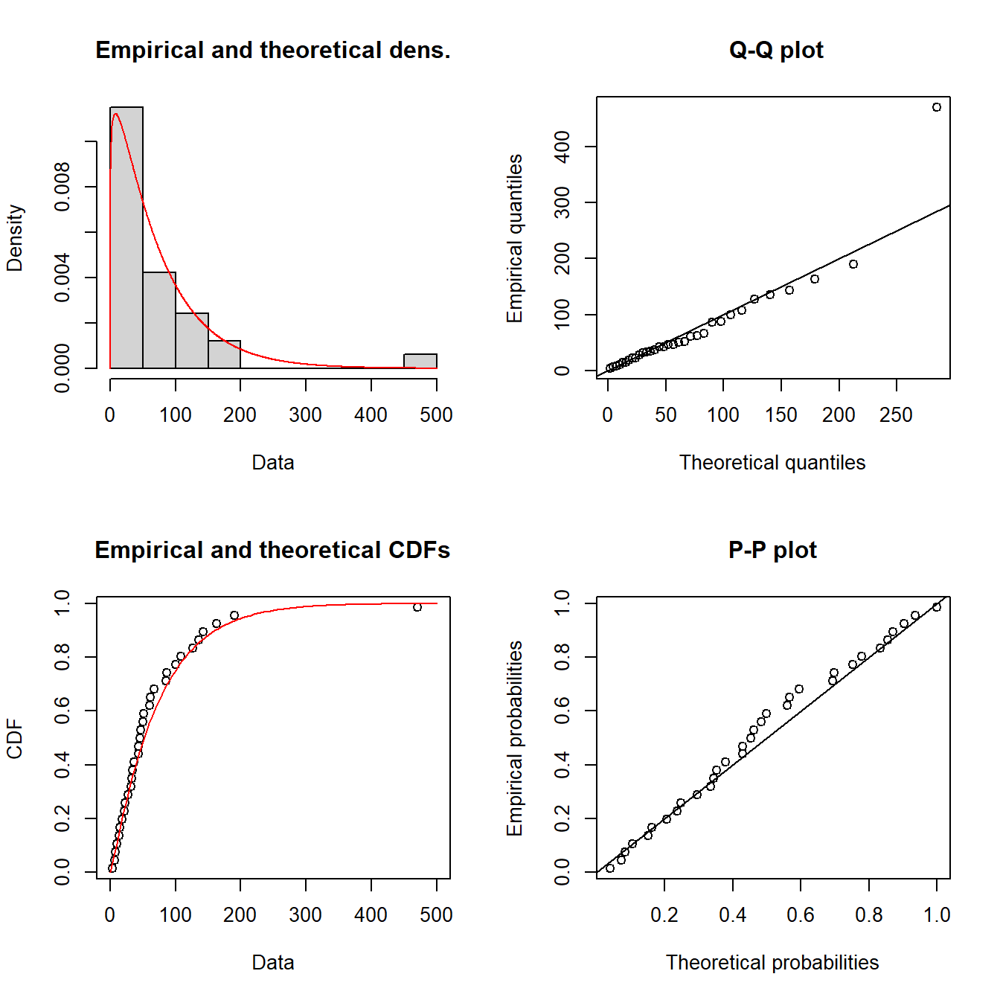

Code
dfm <- data.frame(
X=1:5,
Probability=c(0.1, 0.2, 0.3,0.25,0.15)
)
library(kableExtra)
kable(dfm, booktabs=TRUE) |>
kable_styling(bootstrap_options = "striped", full_width = F)| X | Probability |
|---|---|
| 1 | 0.10 |
| 2 | 0.20 |
| 3 | 0.30 |
| 4 | 0.25 |
| 5 | 0.15 |
“Misunderstanding of probability may be the greatest of all impediments to scientific literacy”
— Stephen Jay Gould
“Statisticians, like artists, have the bad habit of falling in love with their models.”
— George Box
The concept of probability is the foundation of statistical inference. In other words, making inferences about a populations based on a sample relies on probability notions, and any uncertainty in our conclusions can be expressed in probabilistic terms. We also informally used the probability concepts in data collection, particularly with the EPSEM sampling methods.
The concepts we cover in this Chapter will be largely familiar to you from a first year course. Note that we are covering probability concepts and distributions at a very basic level without much maths.
Probability is a mathematical framework used to quantify and describe expectations of random events. Okay, so what is randomness? Where does it come from? This is a philosophical question, really.
From a practical viewpoint, I find it useful to think of randomness and probability as placeholders for incomplete knowledge. If we have complete knowledge of something, we don’t need the concepts of randomness and probability.
To illustrate, when you roll a die, you don’t know what number you’ll get. On inspection of the die, you can see that it has six sides, numbered 1-6. If we assume that it will land on one side, and that there’s equal probability of landing on each of the six sides, then we can form a basic probability model.
| \(x\) | \(P(x)\) |
|---|---|
| 1 | 1/6 |
| 2 | 1/6 |
| 3 | 1/6 |
| 4 | 1/6 |
| 5 | 1/6 |
| 6 | 1/6 |
There are six possible outcomes with equal probability, so the probability of each is 1/6. The probabilities sum to 1.
Where does the randomness come into this scenario? Is there randomness inherent in the process of rolling a die? I would say no. If we had complete knowledge of the system, including the shape of the die, the starting position, the angle and velocity with which it is thrown, and the shape and texture of the surface it lands on, and a good physical model of how these things interact, then we could theoretically be able to predict perfectly the number on which it will land. The trouble is, of course, that all this information is extremely difficult to collect in enough detail to allow us to make such a prediction.
A simpler case is a shuffled deck of cards. When you shuffle a deck of cards for long enough, we’d consider the question of which card is on the top to be random. However, if we knew the starting conditions and exactly how the cards were shuffled, then there’s no randomness, and no need for a probability model.
But most of the world isn’t as simple as shuffling cards or even rolling a die. Our knowledge is so very limited that concepts of uncertainty, randomness, and probability are indispensable to anyone who wants to make any real sense of it.
The naive or classical definition of probability is just a relative frequency. If \(n\) is the total number of equally likely possible outcomes and if \(m\) of those \(n\) outcomes result in the occurrence of some given event, then the probability of that event is \(m/n\).
For example, if a fair die is rolled, there are \(n = 6\) possible outcomes. Let the event of interest be getting a number 4 or more. So, the probability of this event is 3 out of 6 or \(p=1/2\).
The sample space or the set of all possible outcomes need not be finite. For example, tossing a coin until the first head appears will result in an infinite sample space.So, the probability can be viewed as a limiting or long run fraction of \(m/n\) (i.e. when \(n \to \infty\)).
When the sample space is finite and outcomes are equally likely, we can assume that classical probability will be the same as empirical probability. Note that to find the probability of a fair coin landing heads it is not necessary to toss the coin repeatedly and observe the proportion of heads. So when the number of trails is reasonably large, empirical probability may be treated as the true value.
Subjective probability (such as expert opinion) is useful in areas such as decision theory, and its definition does not fit as a relative frequency.
Probabilities can only be between \(0\) and \(1\) (impossible to certain).
A German researcher (Witt 1956) studied the effects of various drugs on the web-building abilities of orb-web spiders (Figure 1).

Say he classified the webs into three types:
complete, partial, or fail.He found the relative frequencies for the three types as follows:
\(P(W=\text{complete}) = 0.2\)
\(P(W=\text{partial}) = 0.3\)
\(P(W=\text{fail}) = 0.5\)
The random variable \(W\) has three possible states but any given observation can only belong to one state. You cannot observe a web that is both “partial” and “complete”, or “complete” and “fail”. These values or states are said to be mutually exclusive.
For mutually exclusive events,
The probability of any two events co-occurring is zero.
The probability of one event or another event occurring is the sum of the two respective probabilities.
For example, either a complete web or a partial web being observed is equal to the sum of \(P(W = \text{complete})\) and \(P(W = \text {partial})\). That is,
If events \(A\) and \(B\) are statistically independent, then \[P(A \textbf{ and } B) = P(A) \times P(B)\]
If the \(n\) events \(A_1, A_2, \dots, A_n\) are mutually independent, then: \[P(A_1 \textbf{ and } A_2 \textbf{ and } \dots \textbf{ and } A_n) = P(A_1) \times P(A_2) \times \dots \times P(A_n)\]
The probability of event A occurring given that event B has already occurred is written in shorthand as \(P(A|B)\).
For example, the probability of a card you’ve drawn being a 5, given that it is a spade. This is known as a conditional probability.
Note that the sample space is reduced to that where B has occurred.
We say that two events (A and B) are independent if
\[P(A | B) = P(A) \textbf{ and } P(B | A) = P(B)\]
This means that observing event A doesn’t make event B any more or less likely, and vice versa.
For any two events \(A\) and \(B\),
\[P(A \textbf{ and } B ) = P(A|B) \times P(B)\] and also
\[P(A \textbf{ and } B ) = P(B|A) \times P(A)\]
There are a large number of genetic-based blood-type systems that have been used for categorising blood. Two of these are the Rh system (Rh+ and Rh–) and the Kell system (K+ and K–). It is found that for any person, their blood type in any one system is independent of their blood type in any other.
For Europeans in New Zealand, about 81% are Rh+ and about 8% are K+. So, we can form a Table of counts as shown in Figure 2:

If a European New Zealander is chosen at random, what is the probability that they are (Rh+ and K+) or (Rh– and K–)?
The answer is 0.0648 + 0.1748 = 0.2396 (verify).
Suppose that a murder victim has a bloodstain on him with type (Rh– and K+), presumably from the assailant. What is the probability that a randomly selected person matches this type?
The answer is 0.0152 (verify).
Assume that 0.63 is the probability of a randomly selected beached whale is a male. So the probability of a beached whale being female is \(1-0.63=0.37\). Suppose that we also observe whether beached whales are juvenile or adult, and the probability of a whale being juvenile, given that it is female, is 0.8, and the probability it is juvenile, given that it is male, is 0.4.
Let us denote the random variables and their outcomes as follows:
Sex (S) = either female (\(f\)) or male (\(m\))
Age (A) = either juvenile (\(j\)) or adult (\(a\))
We are given
\(P(S=m) = 0.63\)
\(P(A=j | S=f) = 0.8\)
\(P(A=j | S=m) = 0.4\)
Easy to visualise the probabilities with this representation as shown in Figure 3.

Within each level, all branches are mutually exclusive events.
The tree covers all possibilities (i.e., the entire sample space).
We multiply as we move along branches.
We add when we move across branches.
What is the overall probability that a whale is juvenile? That is, what is \(P(A = j)\) (or \(P(j)\) for short)?
\[P(j) = P(m \textbf{ and } j) + P(f \textbf{ and } j)= 0.63\times 0.4+0.37 \times 0.8 = 0.548 \]
What is the probability of the whale being female given that it is juvenile? i.e., what is \(P(f | j)\) ?
\(P(f | j)\) doesn’t appear in the tree anywhere, so we will have to go back to first principles.
we know that
\[P(f \textbf{ and } j) = P(f | j) × P(j)\] and
\[P(f \textbf{ and } j) = P(j | f) × P(f)\]
Thus, \[P(f | j) × P(j) = P(j | f) × P(f)\]
\[P(f | j) = \frac {P(j | f) × P(f)} {P(j)}\] This is known as the Bayes rule or theorem.
For our question \[P(f | j) = \frac {P(j | f) × P(f)} {P(j)}= \frac{0.8 \times 0.37}{0.548}= 0.54\]
Consider the number of eggs \((X)\) in an Adelie penguin’s nest. The values range from \(1\) to \(5\), each with a certain probability (or relative frequency) of occurrence.
dfm <- data.frame(
X=1:5,
Probability=c(0.1, 0.2, 0.3,0.25,0.15)
)
library(kableExtra)
kable(dfm, booktabs=TRUE) |>
kable_styling(bootstrap_options = "striped", full_width = F)| X | Probability |
|---|---|
| 1 | 0.10 |
| 2 | 0.20 |
| 3 | 0.30 |
| 4 | 0.25 |
| 5 | 0.15 |
The barplot of these probabilities is shown as Figure 4.
library(tidyverse)
library(ggpmisc)
theme_set(theme_minimal())dfm |>
ggplot() +
aes(x=X, y=`Probability`) +
geom_col()+
theme_minimal() +
scale_x_continuous(breaks = c(0:9))+
annotate(geom = "table", label = list(dfm), x=8, y=.15)
This is an example of a theoretical probability distribution, which describes the behaviour of a data-producing system. It’s a model for producing random values with specific probabilities.
Note the probabilities add to \(1\) because \({1,2,3,4,5}\) is a complete distribution. There are no other possibilities.
Two important parameters for describing the probability distribution of a random variable \(X\) are:
For a discrete probability distribution, the population mean \(\mu_X\) is simply the sum of each outcome multiplied by its probability.
\[\mu_X = \text{E}(X) = \sum xP(X=x) = \sum xP(x)\]
In R,
X <- 1:5
P <- c(0.1, 0.2, 0.3,0.25,0.15)
(Mean <- sum(X*P))[1] 3.15The population variance is given by
\[\sigma_X^2 = \text{Var}(X) = \sum (x-\mu_X)^2 P(x)\]
The population SD is simply the square-root of the variance.
In R,
X <- 1:5
P <- c(0.1, 0.2, 0.3,0.25,0.15)
Mean <- sum(X * P)
(Variance <- sum((X-Mean)^2*P))[1] 1.4275(SD <- sqrt(Variance))[1] 1.19478The above example of the distribution of numbers of eggs of penguins is an odd case, because we’ve simply listed the outcomes and probabilities. More often, we use a known probability distribution where the probabilities of any value of \(X\) may be calculated using a Probability Mass Function (PMF, for discrete distributions) or Probability Density Function (PDF, for continuous distributions). A PMF or PDF is a formula that can be used to calculate the probability associated with any value; that is, \(\text{P}(X=x)\), the probability that the random variable \(X\) will take a particular value \(x\). These probabilities arise from making particular assumptions about how the values arise.
The remainder of this chapter will discuss some of the more common probability distributions.
Discrete probability distributions are those that can produce a limited set of values, usually non-negative integers {0, 1, 2, 3, …}. The two most useful ones are the Binomial and the Poisson.
Let \(X\) be the number of heads when two coins are tossed. The possible outcomes are shown in Figure 5.

In general, when there only two possible outcomes say success or failure (\(1\) or \(0\); Yes or No; On or Off; Heads or Tails; etc.), we deal with a binary or Bernoulli random variable.
The count of the number of successes \(X\) out of a fixed total of \(n\) independent trials (in the above coin tossing example, there were \(n = 2\) trials) follows the binomial distribution.
In other words, \(X \sim Bin(n, p)\), where \(p\) the probability of a success. The binomial probability mass function \(P(X=x)\) or \(P(x)\) is given by
\[P(x)={n \choose x}p^{x}(1-p)^{n-x}\]
It is easy to plot these probabilities in R. For \(n=10\), \(p=0.3\), the binomial probabilities \(P(x)~~~ x=0,1,2, \dots, 10\) are plotted in Figure 6.

Example: A microbiologist conducts an experiment to create a recombinant strain of bacteria that is resistant to penicillin. She plates out the bacteria on a plate, and picks out 10 colonies. She knows that the probability of successfully creating a recombinant is 0.15.
What is the probability that if she mixes all 10 colonies in a growth medium with penicillin, something (anything) will grow?
Given:
\(X \sim Bin(n = 10, p = 0.15)\). What is \(P(x > 0)\)?
Note \(P(x > 0)=1-P(x = 0)\). So in R, compute this as follows:
1 - dbinom(x=0, size=10, prob=.15)[1] 0.8031256or
1-pbinom(q=0, size=10, prob=.15)[1] 0.8031256Note that function pbinom(k,size=n,prob=p) gives the cumulative probabilities up to and including the quantile \(k\) (which is equal to zero in our example).
\[P(X\leq k)=\sum _{i=0}^{k}{n \choose x}p^{x}(1-p)^{n-x}\]
The mean and variance of the binomial random variable is given by
\[\mu_X=np~~~~ \sigma^2_X=np(1-p)\]
So the expected number of recombinant strain of bacteria would be
\[\mu_X=np=10*0.15=1.5\]
with SD
\[\sigma_X=\sqrt {np(1-p)}=1.129159\]
The Poisson distribution is used to obtain the probabilities of counts of relatively rare events or outcomes that occur independently in space or time.
Some Examples:
The random variable \(X\), the number of occurrences (count), often follows the Poisson distribution whose probability function is given by
\[\Pr(x)= \frac{\lambda^x e^{-\lambda}}{x!}~~~ x=0,1,2,\dots, \infty\]
The parameter \(\lambda\) is the mean which is also equal to the variance.
\[\mu_X=\lambda~~~~ \sigma^2_X=\lambda\]
Main assumptions:
The events occur at a constant average rate of \(\lambda\) per unit time or space.
Occurrences are independent of one another as well as they do not happen at exactly the same unit time or space.
Example: Consider the number of changes that accumulate along a stretch of a neutrally evolving gene over a given period of time.
This is a Poisson random variable with a population mean of \(\lambda=kt\), where \(k\) is the number of mutations per generation, and \(t\) is the time in generations that has elapsed.
Assume that \(k = 1\times10^{-4}\) and \(t = 500\).
For \(\lambda=kt=0.05\), the Poisson probabilities are shown in Figure 7.

What is the probability that at least one mutation has occurred over this period?
\(P(x > 0)=1-P(x = 0)\) is found in R as follows:
1 - dpois(x=0, lambda=0.05)[1] 0.04877058Another example: The number of parasites in a host is a Poisson random variable with mean 1.5. What is the probability that there will be exactly one parasite in the host? Examine Figure 8 for the answer.

A discrete random variable takes values which are simply points on a real line. In other words, there is an inherent discontinuity in the values a discrete random variable can take.
If a random variable, \(X\), can take any value (i.e., not just integers) in some interval of the real line, it is called a continuous random variable. Examples include variables such as height, weight, length, percentage protein etc.
For a discrete random variable \(X\), the associated probabilities \(P(X=x)\) are also just points or masses, and hence the probability function \(P(x)\) is also called as the probability mass function (pmf).
For continuous random variables, probabilities can be computed when the variable falls in an interval such as \(5\) to \(15\), but not when it takes a fixed value such as \(10\) (which is equal to zero).
The probability density function (pdf) gives the probabilities as an area under the curve.
For example, consider a random proportion \((X)\) between \(0\) and \(1\). Here \(X\) follows a (standard) continuous uniform distribution whose (probability) density function \(f(x)\) is defined as follows:
\[f(x)=\begin{cases}{1}~~~\mathrm {for} \ 0\leq x\leq 1,\\[9pt]0~~~\mathrm {for} \ x<0\ \mathrm {or} \ x>1\end{cases}\]
This constant density function is very simple; see Figure 9.
data.frame(x = c(-.5, 1.5)) |>
ggplot() +
aes(x) +
stat_function(
fun = dunif,
n = 10001,
args = list(min = 0, max = 1)
) +
ylab("f(x)") +
theme_minimal()
The cumulative distribution function, CDF, \(F(x)\) gives the left tail area or probability up to \(x\). This is probability is found as
\[F_{X}(x)=\int _{-\infty }^{x}f_{X}(t)\,dt\] The relationship between the density function \(f(x)\) and the distribution function \(F(x)\) is given by the Fundamental Theorem of Calculus.
\[f(x)={dF(x) \over dx}\]
The total area under the pdf curve is \(1\). The probability of obtaining a value between two points (\(a\) and \(b\)) is the area under the pdf curve between those two points. This probability is given by \(F(b)-F(a)\).
For the uniform distribution \(U(0,1)\), \(f(x)=1\). So,
\[F_{X}(x)=\int _{-\infty }^{x}\,dt=x\]
For example, the probability of a randomly drawn fraction from the interval \([0,1]\) to fall below \(x=0.5\) is 50%.
The probability of a random fraction falling between \(a=0.2\) and \(b=0.8\) is
\[F(b)-F(a)=0.8-0.2=0.6\]
The Gaussian or normal distribution is parameterised in terms of the mean \(\mu\) and the variance \(\sigma ^{2}\) and its density function is given by
\[f(x)={\frac {1}{\sigma {\sqrt {2\pi }}}}e^{-{\frac {1}{2}}\left({\frac {x-\mu }{\sigma }}\right)^{2}}\] If \(X \sim N(\mu, \sigma)\), its Z-score is calculated from \(X\) by subtracting \(\mu\) and dividing by the standard deviation \(\sigma\).
\[Z={\frac {X-\mu }{\sigma }}\] The random variable \(Z \sim N(0,1)\). Its pdf is given by
\[f(z)={\frac {1}{ {\sqrt {2\pi }}}}e^{-{\frac {1}{2}}z^{2}}\]
We often deal with the Standard normal because the symmetric bell shape of the normal distribution remains the same for all \(\mu\) and \(\sigma\); see Figure 10.

Example: The weight of an individual of Amphibola crenata (snail) is normally distributed with a mean of \(40g\) and variance of \(20g^2\) as shown in Figure 11.
dfs <- tibble(
x=seq(20, 60, length=1000),
`f(x)` = dnorm(x, mean=40, sd=sqrt(20))
)
ps <- ggplot(dfs) + aes(x = x, y = `f(x)`) +
geom_area(fill="gray") +
geom_vline(xintercept=40)
ps
What is the probability of getting a snail that weighs between \(35g\) and \(50g\)? In R, the function pnorm() gives the CDF.
pnorm(50, mean=40, sd=sqrt(20)) -
pnorm(35, mean=40, sd=sqrt(20)) [1] 0.8555501Figure 12 illustrates the computation.
ps +
geom_area(data = dfs |> filter(x < 50 & x > 35),
fill="coral1", alpha=.5)
What is the probability of getting a snail that weighs below \(35g\) or over \(50g\)?
pnorm(35, mean=40, sd=sqrt(20)) +
pnorm(50, mean=40, sd=sqrt(20), lower.tail=FALSE) [1] 0.1444499Under standard normal, the areas under the pdf curve are shown in Figure 13 for various situations.

There are many probability distributions which are asymmetrical. A few of them are briefed here.
Log-normal
A random variable \(X\) is log-normally distributed, when \(log_e(X)\) follows normal. Alternatively, if \(X\) follows normal, then \(e^X\) follows log-normal.
The log-normal density function is shown below:
\[f(x)={\frac {1}{x\sigma {\sqrt {2\pi }}}}\ \exp \left(-{\frac {\left(\ln x-\mu \right)^{2}}{2\sigma ^{2}}}\right),~~ x>0\] While the R function dnorm() gives the normal density, the function dlnorm() gives the log-normal density.
The standard log-normal pdf and CDF are plotted in Figure 14

The mean & variance of the lognormal random variables are:
\[\mu_X=e^{\left(\mu +{\frac {\sigma ^{2}}{2}}\right)}~~~~\sigma_X^2=(e^{\sigma ^{2}}-1) e^{(2\mu +\sigma ^{2})}\]
Weibull
The probability function of the Weibull distribution is given below:
\[f(t;\eta,\beta) = \begin{cases} \frac{\beta}{\eta}\left(\frac{x}{\eta}\right)^{\beta-1}e^{-(x/\eta)^{\beta}} ~~x\geq0 ,\\ 0~~~~~~~~~~~~~~~~~~~~~~~~~~~~~ x<0, \end{cases}\]
\(\beta~(> 0)\) is the called the shape parameter and \(\eta~(> 0)\) is the called scale parameter, and different values of \(\beta\) will result in different distributional shapes; see Figure 15.

The Weibull distribution becomes the exponential distribution for \(\beta=1\).
The scale parameter \(\eta\) is called the characteristic life because \(\eta\) becomes the quantile with slightly less than two-thirds of the population (63.21%) below it irrespective of the shape \(\beta\) when this distribution is used to model lifetimes.
Gamma
The probability function of the gamma distribution with shape parameter \(\alpha\) and scale parameter \(\beta\) is given below:
\[\displaystyle {\begin{aligned}f(x)={\frac {\beta ^{\alpha }x^{\alpha -1}e^{-\beta x}}{\Gamma (\alpha )}}\quad {\text{ for }}x>0\quad \alpha ,\beta >0,\\[6pt]\end{aligned}}\] where \(\displaystyle \Gamma (\alpha)=\int _{0}^{\infty }x^{\alpha-1}e^{-x}\,dx.\)
Figure 16 shows the plot of gamma density for various shape and scale parameters.

Lognormal, Weibull and gamma distributions are useful to model right skewed data, particularly lifetimes data, but we need large amount of data, say over 300, to discriminate the three fitted distributions.
Beta distribution
The beta distribution is bounded on the interval \([0, 1]\) and parameterised by two positive shape parameters, say \(\alpha\) and \(\beta\).
The probability function of the Weibull distribution is given below:
\[\begin{aligned}f(x;\alpha ,\beta ) ={\frac {x^{\alpha -1}(1-x)^{\beta -1}}{\displaystyle \int _{0}^{1}u^{\alpha -1}(1-u)^{\beta -1}\,du}}={\frac {1}{\mathrm {B} (\alpha ,\beta )}}x^{\alpha -1}(1-x)^{\beta -1}\end{aligned} \] where \(\mathrm {B} (\alpha ,\beta )=\frac {\Gamma (\alpha )\Gamma (\beta )}{\Gamma (\alpha +\beta )}\). Figure 17 shows the plot of beta density for various shape parameter combinations.

When \(\alpha=\beta=1\), the beta distribution becomes the continuous uniform distribution. This distribution is useful to model component fractions such as percentage of protein in milk powder, and is also widely used in Bayesian analysis.
Data from a normal (or any other distribution) may not look very much like the expected theoretical shape (‘bell-curve’ for normal) unless there is very large amount of it. Figure 18 is for a random sample of 200 from the standard normal distribution. Compare the departures from the expected theoretical shape. Recall that we covered the ECDF curves in the last Chapter. The CDF curve is just theoretical one but fitted with data. More on this later.

Small sample effect For small samples, we do not expect many outliers but the ‘ideal’ shape may not be seen; see Figure 19.

Question: Why do we use the Normal distribution so much? Answer: Because:
Many physical, biological, engineering and economic quantities do seem to follow a Normal distribution (sometimes after a transformation of the data to an appropriate scale). An example is that the logarithm of the ‘waiting time’ between earthquakes in Wellington is normally distributed. (The use of the logarithm may worry you, but it is natural for the subject area. Note that the magnitude of earthquakes is also measured on a logarithmic scale, namely the familiar Richter scale.)
Data that are approximately Normal seem to turn up very frequently in practice. In particular this may occur because
The Normal distribution is often what you get (for mathematical reasons) when you add together (or average) lots of different things. This result is known as the central limit theorem (CLT). For example, test scores are calculated by adding together marks from different questions, or share market movements are the result of many individuals and firms making private decisions. There is another theory which establishes that the sampling distributions of quantiles of continuous distributions of are approximately normal for large sample sizes.
We shall see in this course that residuals play a large part. These are, for example, the ‘errors’ left over after fitting a regression line to data. Quite often, we expect residuals to follow a Normal distribution.
In practice, data from a ‘Normal distribution’ may not look very much like the ‘bell-curve’ unless there is very large amount of it. This statement has practical implications but first let us check whether the statement is true. We can do this by simulating batches of data from a Normal distribution (using software) and noting the variations across the data sets. Moreover, because the Normal distribution and its bell shaped curve are so important and ubiquitous, it is instructive to apply EDA methods to Normal data, for we would certainly like EDA methods to work well for that type of curve.
For the first batch, we simulated 1000 numbers from a Normal distribution with mean 80 and standard deviation of 12. The numbers could represent, for example, the diastolic blood pressure of 1000 adult New Zealanders. Figure 20 shows the histogram and the boxplot of the random normal data. Even though the typical bell-shaped pattern (theoretical normal curve shown in dotted lines) is evident, the histogram is not perfectly symmetric as the numbers were chosen at random so that by chance more fall into some classifications than would be expected. Also there are a few unusual values at the both extremes (see the boxplot). In practice if we didn’t know that the data came from a Normal distribution we might investigate the three highest points to see if they were valid points or outliers. The extreme edges of a data often comprise very atypical values we would not tend to place too much weight on the conflicting evidence they give about symmetry. The mean and median of this simulated batch are somewhat closer but the median is slightly off-centred from the quartiles.Well, so far so good. Now what if we have smaller batches?

For a normal distribution,
68% of the values fall within 1 standard deviation of the mean
95% of the values fall within 2 standard deviation of the mean
99% of the values fall within 3 standard deviation of the mean.
As a special case, 50% of the values will fall within 0.6745 standard deviations of the mean. For symmetric distributions, mean equals the median. Hence the fourths (quartiles) of random data obtained drawn from theoretical normal population will be
Lower hinge = median - \(0.6745\times S~(\simeq\)lower quartile),
and
Upper hinge = median + \(0.6745 \times S~(\simeq\) upper quartile),
where \(S\) is the standard deviation. Thus F-spread (or \(\simeq\) the IQR) \(\simeq\) 1.35\(\times S\). Hence
inner fences= median \(\pm\) 2 F-spread = median \(\pm\) 2.7\(\times S\)
The probability that an observation falls between these fences is 0.993, or the probability of falling outside these fences is 0.007. Thus in our simulated batch of size 1000, we expect about 7 possible outliers but none for the simulated batch size 100. Outer fences are defined as being 2 steps (3\(\times\)F-spread) away from the fourths so that
outer fences= median \(\pm\) 3.5\(\times\)F-spread = median \(\pm\) 4.72\(\times S\)
The probability of a point falling outside of this range is the extremely small amount of 0.000002. It is not surprising, then, that none of the values in our simulated batches fell outside of the outer fences. If they did, we would class them as probable outliers. Of course, with distributions other than the Gaussian one, and particularly for asymmetric distributions, the probability of a value falling outside these fences is higher.
The shapes of the ECDF curves shown in Figure 21 are typical of the empirical cumulative distributions for data from Normal populations. This curve was drawn using 1000 and 100 simulated random normal data. It could perhaps be described as an S-shape on its side (or lazy or stretched out S). The curve is flatter at either end which reflects the small amounts of relative frequency in the tails of the Normal distribution. The theoretical Cumulative Distribution Function (CDF) curve for the normal distribution is also shown in Figure 21 as a smooth curve. For smaller samples from a Normal population, the ECDF curve will vary about the theoretical curve, and, of course, the variation is likely to be larger the smaller the sample; see Figure 21(B).

To visually check whether a given set of data are normally distributed, one can create a normal quantile-quantile (Q-Q) plot. In this plot the quantiles of the sample are plotted against the theoretical quantiles of a standard normal distribution N(0,1). If the data, \(Y_{i}\), are normally distributed N(\(\mu, \sigma\)) then \(Z_{i} = \left(Y_{i} -\mu \right)/\sigma\) has a standard normal distribution. If we plot the quantiles of the data against corresponding quantiles of the standard normal distribution, the points should roughly lie on the straight line: \[Y_{i} =\mu +\sigma Z_{i}\] that is, a line with intercept \(\mu\), and slope \(\sigma\).
We should note that the mean and standard deviation do not appear in the formula \(Y_{i} =\mu +\sigma Z_{i}\) by coincidence. Rather, the mean and standard deviation are intimately connected to the normal distribution: if the data had not been normal then the line with these parameters would not pass through the data.

Figure 22 shows the normal Q-Q plot for 50 random values from N(80,12). Note that the points in the middle largely plot on a line. It is natural that the tail part of the distribution shows more variation, and hence we will ignore such departures.
The normal Q-Q plot is presented as a normal probability plot in some software where the theoretical quantiles are replaced by the associated normal probabilities. Such normal probability plots show the sample data in the \(X\)-axis and the normal probabilities in the \(Y\)-axis. In both plots, we mainly look whether or not the points plot roughly on a straight line.
download.file(
url = "http://www.massey.ac.nz/~anhsmith/data/rangitikei.RData",
destfile = "rangitikei.RData")
load("rangitikei.RData")
p1 <- ggplot(rangitikei) +
aes(sample = people) +
stat_qq() + stat_qq_line()
p2 <- ggplot(rangitikei) + aes(y=people, x="") +
geom_boxplot() +
xlab("") +
coord_flip()
gridExtra::grid.arrange(p1, p2, ncol=1) 
Figure 23 shows the normal Q-Q plot for the number of people who made use of a recreational facility (rangitikei). This plot clearly reveals that the data are not normal. The plotted points show a curved but asymmetric pattern. This pattern matches with the right skewness seen in the data (see the boxplot given in Figure 23.
Note that normality and symmetry are not the same. If the true distribution of the data is symmetric such as uniform, rectangular or triangular distributions, then the normal Q-Q plot will show a symmetric pattern for the plotted points but they will not plot on a straight line. As an example, the normal Q-Q plots for batches of random data from Student’s \(t\) (to be covered later in the next Chapter) and few other symmetric distributions is shown in Figure 24. Clearly normality is rejected for other symmetric non-normal distributions.

For a normal distribution, which is specified by its mean \(\mu\) and variance \(\sigma^2\), parameter estimation is fairly straight forward. The sample mean and variance become the estimates. The Poisson parameter \(\lambda\) is also the mean of the distribution and hence the sample mean becomes the estimate. On the other hand, distributions such as beta, and gamma involve shape and/or scale parameters and hence their estimation becomes complicated. The population mean and SD of these distributions are functions of the distributional parameters. Data from skewed distributions are not well represented by the sample mean and SD.
In order to estimate the distributional parameters, we follow a method called the Maximum Likelihood (ML) method. The likelihood function (or simply the likelihood) is based on the joint probability of the observed data as a function of the distributional parameters. The ML method maximises the likelihood function to estimate the distributional (model) parameters. There are also other methods of estimation such as the method of moments and we will not delve into the theory behind these methods in this course. We will simply use R packages such as VGAM or fitdistrplus to estimate the parameters.
Example: Your are familiar with the rangitikei dataset which gives the number of people who made use of a recreational facility. This variable is right skewed, and let us fit a lognormal distribution to this variable using the fitdistrplus package.
library(fitdistrplus, exclude = c("select", "area"))Warning in rm(list = exclude, envir = env): object 'select' not foundWarning in rm(list = exclude, envir = env): object 'area' not foundfitdist(rangitikei$people, "lnorm")Fitting of the distribution ' lnorm ' by maximum likelihood
Parameters:
estimate Std. Error
meanlog 3.775514 0.1789851
sdlog 1.028191 0.1265611The adequacy of the lognormal distribution fitted, can be examined using graphical displays as in Figure 25.
lnormfit <- fitdist(rangitikei$people, "lnorm")
plot(lnormfit)
The lognormal fit does not appear too bad to people data. How about fitting gamma distribution instead of lognormal? This fit can again be accomplished using the fitdistrplus package.
fitdist(rangitikei$people, "gamma")Fitting of the distribution ' gamma ' by maximum likelihood
Parameters:
estimate Std. Error
shape 1.14299006 0.249453814
rate 0.01593588 0.004314727The EDA plots to assess the gamma distribution fit are shown in Figure 26.
gammafit <- fitdist(rangitikei$people, "gamma")
plot(gammafit)
Note that this package gives the estimated gamma parameters in a reparametrised form. For small and medium size datasets \((n<300)\), we may not be able discriminate between gamma & Weibull type of right skewed distributions.
We can of course fit a gallery of probability distributions but we have to select the best fitting distribution, if it exists.
The function descdist() in the fitdistrplus package will obtain a plot of kurtosis, a measure of excessive peakedness, against the square of a measure of skew for a number of probability distributions. This plot is known as the Cullen and Frey plot. We can visibly judge the best fitting distribution using this plot. For the number of people data, this plot is shown in Figure 27.
descdist(rangitikei$people)summary statistics
------
min: 4 max: 470
median: 46
mean: 71.72727
estimated sd: 86.28089
estimated skewness: 3.3264
estimated kurtosis: 17.11618 
The presence of a large outlier in peoples data particularly affect the measures of skewness and kurtosis. So Cullen and Frey plot does not particularly strongly support the lognormal fit but suggests the lack of fit for symmetrical distributions such as normal (read corresponding to zero skew).
When the observed data is a mixture from two or more distributions or contain a large number of unusual observations, no single distributional fit will be satisfactory. For example, count data may not fit the Poisson distribution due to excessive zeros.
We will cover the power transformation of data in the next Chapter, which is a remedy for dampening the effect of outliers and mixture of subgroups (distributions).
This Chapter provided a revision of probability concepts usually covered the first year level covered at the seventh form level or in a first year Statistics course. A few popular probability distributions are also introduced.
Identification of a probability distribution is not an easy task for a set of observed data. This issue is not settled purely on statistical grounds. EDA helps to short-list distributions fitting reasonably well to the data. For regression type of models fitted to continuous responses, the normal distribution works generally well.
The material covered in this Chapter forms the foundation for many of the inferential methods.